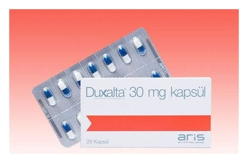

Duxalta 30 mg Gastro-Rezistan Sert Kapsül, 28 Kapsül

Ne için kullanılır
KT · Bölüm 1DUXALTA®, opak beyaz gövdeli ve opak lacivert kapaklı, “3” büyüklüğünde, sert jelatin kapsüllerin içinde beyaz renkli pelletlerdir. DUXALTA®, 28 kapsüllük Al/PVC-PVDC blister ambalajlarda kullanıma sunulur.
DUXALTA®duloksetin etkin maddesini içeren bir ilaçtır. DUXALTA®sinir sistemindeki serotonin ve noradrenalin seviyelerini artırır.
/ 11 2 DUXALTA®size (yetişkinlere), • Depresyon (ruhsal çökkünlük), • Diyabete bağlı nöropatik ağrı (sinir hasarıyla oluşan diyabete bağlı nöropatik ağrı, bıçak saplanır gibi, iğne batması ve sızı şeklinde, zonklayıcı ve elektrik çarpması gibi kavramlarla tanımlanan ağrının tıp dilindeki karş ılığıdır. Ağrının olduğu bölgede his kaybı görülebilir veya sıcak, soğuk, basınç, dokunma gibi uyarılar ağrı hissine neden olabilir.), • Genel anksiyete bozukluğu (genel anksiyete bozukluğu, sürekli endişeli ve sinirli hissetme halidir.), • Fibromiyalji (fibromiyalji özellikle sırt, boyun ve omuzlarda belirgin olmak üzere tüm vücutta görülebilen ve halsizliğin de eşlik edebildiği ağrı ile karakterize bir kas-iskelet sistemi rahatsızlığıdır.), • Kronik ağrı (kemik, eklem veya kaslarda hissedilen kronik ağrı, devamlı hissedilen, nükseden gerilme hissi, ağrı ve/veya sertliktir.)
diye adlandırılan hastalıkların tedavisi için verilmiş bulunmaktadır.
DUXALTA®, depresyonu veya anksiyetesi olan kişilerin çoğunda iki hafta içinde etkisini göstermeye başlar, ancak kendinizi daha iyi hissedene kadar geçen bu süre 2-4 hafta kadar da olabilir. Kendinizi daha iyi hissettiğiniz dönemde de depresyonunuzun ve anksiyetenin tekrarlamasını önlemek için doktorunuz size DUXALTA®vermeye devam edebilir.
Diyabetik nöropatik ağrısı olan kişiler kendilerini iyi hissedene kadar birkaç hafta geçebilir. Eğer tedaviye başladıktan iki ay sonra kendinizi iyi hissetmezseniz doktorunuzla konuşunuz.